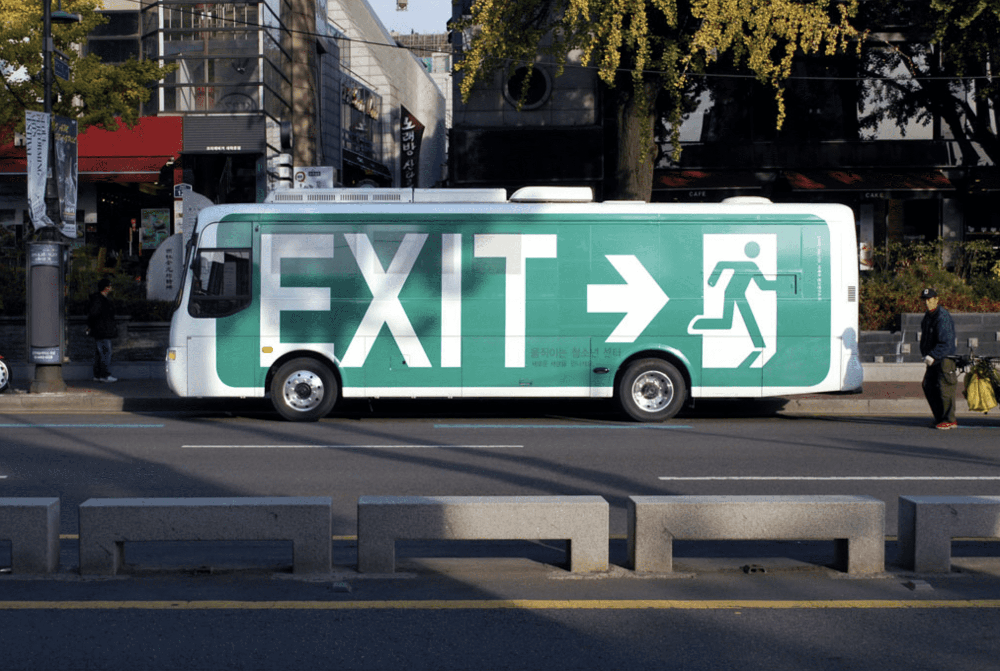

22:00은
어떤 팀인가요?
안녕하세요? 팀 22:00 입니다. 둘둘공공, 열시, 이십이시 등 무엇으로 불려도 좋습니다. 22:00는 움직이는청소년센터 EXIT 아웃리치 자원활동을 통해 만났습니다. 멤버는 공기, 수연, 찬욱, 예찬으로 구성되어 있으며 저희는 각자 다른 활동과 일을 하고 있습니다. 공기는 만화를 그리며 협동조합에서 일하고 있고, 수연은 공익변호사 단체에서 활동을, 예찬은 그래픽디자인과 브랜딩을, 찬욱은 그래픽디자이너이면서 움직이는청소년센터 EXIT에서 상임활동을 하고 있습니다.
EXIT는 사단법인 들꽃청소년세상의 산하기관으로 버스를 중심으로 청소년 아웃리치 사업을 수행합니다. 또한 청소년과 어떻게 관계 맺느냐를 가장 중요하게 생각합니다. ‘어리고, 불쌍하니까 잘 대해주는 곳’이 아니기 위해 많이 이야기하고 노력합니다. 엑시트는 사회적 권한이 너무 없는 청소년에게 존재만으로 마땅히 받아야 할 존중이 있는 공간이길 바랍니다. 청소년들이 사회적 구성원으로서 주체성을 발휘하여 살아갈 수 있도록 지역사회와 함께 청소년 인권이 보장되는 환경을 만들기 위한 다양한 활동을 하고 있습니다. 움직이는청소년센터 EXIT는 청소년들과 함께 세상의 차별과 폭력에 맞서고, 우리의 세상이 다양한 삶을 존중하는 곳이 되기를 꿈꿉니다.
그렇다면 어떤 프로젝트를
기획하고 의도하나요?
22:00의 구심점은 매주 금요일 밤, 신림에서 진행되는 아웃리치 활동입니다. 거리 위에서 청소년들과 만나 청소년이 중심이 되는 공간을 열고, 찾아오는 청소년들을 환대합니다. 우리는 공식적으로 2021년에 활동이 종료되는 EXIT 상황과 맞물려 우리가 기록할 수 있는 방식으로 청소년 주거권(아래 참조) 에 대한 이야기를 하고자 합니다.
‘위기’를 이용해 자극적인 서사를 만들어내는 것이 아닌, 청소년 주거권에 대해 알지 못했고, 알 수도 없었던 이야기를 전해보려고 합니다. 그 수단으로 무크지와 컴필레이션 앨범을 선택했습니다. 무크지는 글과 사진, 만화, 디자인 등을 매개로 이미지와 글을 통해 우리가 전달하고자 하는 이야기를 담을 예정이며, 컴필레이션 앨범은 글이 담지 못하는 음악만이 할 수 있는 이야기를 담고자 합니다. 조금 더 욕심을 내보자면, 청소년들이 함께 작업에 참여할 수 있는 환경을 만들고, 작업을 통해 공동의 결과를 도출해내고자 합니다.
잠깐만요,
청소년 주거권은 무엇인가요?
아동, 청소년 주거권은 가정과의 단절 여부와 무관한 시민으로서 아동, 청소년의 권리이며, 시설에서 거주하는 아동, 청소년들도 보장받아야 한다는 점에서 ‘가정 밖’ 대신 주거위기라는 표현을 사용합니다. ‘주거위기’ 상황은 1. 정해진 거처 없이 거리 생활을 하거나 (비정착성) 2. 쉼터나 타인의 주거와 같은 임시적인 공간에 머물거나 (비정규성), 3. 고시원이나 원룸텔 등 비적정 주거환경에 머물고 있거나 (비적정성) 4. 보호가 필요한 아동 또는 위기 청소년으로 보호를 받았거나. 5. 보호가 종료된 상황을 포함합니다.
국가는 사회권으로서 아동, 청소년에게 ‘인간다운 주거생활’을 보장하기 위한 정책을 실시해야 할 의무가 있고, 정책의 실시를 위해 충분한 예산과 인력을 배치해야 합니다. 주거권은 “물리적, 사회적 위험으로부터 벗어나 쾌적하고 안정적인 주거환경에서 인간다운 주거생활을 할 권리(주거기본법 제2조)”합니다. 주거는 단순히 재산이 아니라, 정주할 수 있고 안정적이며 살기에 적합한 곳이어야 한다. 삶을 기획하고 실천하기 위한 터전이며, 안전을 지키고, 집에 거주하는 사람이 ‘내가 나답게’ 살아가는 공간이자 지역사회와 연결이 시작되는 곳입니다.